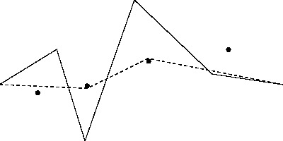

|
| Contest: LISH2010 Day4 GOLD Division |
|
| Your proctor is Momchil Tomov |
|
|
TRAINING MODE
Solve all problems or DIE!
**********************************************************************
GOLD PROBLEMS
**********************************************************************
Three problems numbered 1 through 3
**********************************************************************
Problem 1: Apple Catching [Jelle van den Hooff, 2010]
Farmer John is collecting apples in his orchard that is modelled
as a straight line whose length does not exceed 100,000 meters.
Trees can be found at various integer locations along this line.
At time t=0, FJ strolls through the orchard entrance at x=0 with
the singular idea that he wants to harvest apples by catching them
as they fall from the trees.
Apples only rarely fall to the ground, and FJ wants lots of apples.
Luckily, he knows precisely when each of the N (1 <= N <= 100,000)
conveniently numbered apples to be harvested is going to fall. Apple
i falls from its tree at distance D_i (1 <= D_i <= 100,000) meters
from the orchard entrance exactly T_i (1 <= T_i <= 100,000,000)
seconds after FJ enters the orchard.
FJ walks at a maximum speed of 1 meter per second and catches an
apple if he is standing below it as it falls from the tree. FJ can
catch multiple apples at once if they happen to fall from the same
tree at the same time.
FJ, used to living with thousand of cows and even more pastures has
no trouble running around virtually forever. If he is willing to
wait until the last apple has fallen, how many apples can he catch?
Suppose seven apples are to fall according to this table (whose
columns are tree location followed by apple-fall-time):
1 19 7 9
2 7 8 10
3 5 11 1
12 4
This illustration depicts one way FJ can catch four apples -- the
maximum he can catch:
Tree dist: 1 2 3 4 5 6 7 8 9 10 11 12
Drop time: 19 7 5 9 10 1 4
Apples: ----*---*---*---------------*---*-----------*---*
FJ walking times (with apple-catching marked as '<'):
0...1...2...3
4
5<..6...7...8...9<.10<
17..16..15..14..13..12..11..
18
19<
PROBLEM NAME: acatch
INPUT FORMAT:
* Line 1: A single integer: N
* Lines 2..N+1: Line i+1 contains two space-separated integers: D_i
and T_i
SAMPLE INPUT (file acatch.in):
7
3 5
8 10
2 7
1 19
11 1
7 9
12 4
OUTPUT FORMAT:
* Line 1: The maximum number of apples FJ can catch
SAMPLE OUTPUT (file acatch.out):
4
**********************************************************************
Problem 2: Rope Tightening [Brian Dean, 2010]
Farmer John's cows like to graze in a field with N (1 <= N <= 3,000)
grassy knolls conveniently numbered 1..N wherein knoll i has
coordinates (kx_i, ky_i) (-100,000 < kx_i < 100,000; -100,000 <
ky_i < 100,000).
The field is surrounded by fences on all sides, such that its
boundary is a rectangle with vertices (-100,000, -100,000), (-100,000,
100,000), (100,000, -100,000), and (100,000, 100,000).
An old, dilapidated fence runs through the middle of the field,
from coordinate (-100,000, 0) to coordinate (100,000, 0). This fence
is generally not very straight, but rather can be thought of as a
sequence of line segments that connect F (1 <= F <= 10000) fence
posts, conveniently numbered 1..F.
Fence post i has coordinates (fx_i, fy_i) (-100,000 <= fx_i <=
100,000; -100,000 <= fy_i <= 100,000). Fence post 1 is at (-100,000,
0), and fence post F is at (100,000, 0). FJ notes that the x-coordinates
of successive fence posts are strictly increasing and that no knoll
is located on the path of fence (either at a fence post or on any
line segment between two successive fence posts).
FJ would like to replace his old fence with a new one. However, the cows
are very used to their grassy knolls and will be upset if the new fence
separates the knolls in a different way from the old fence. More precisely,
if there are two knolls that were previously on the same side of the fence,
and they are now on different sides of the fence (or vice versa), the cows
will be upset. Additionally, due to zoning restrictions, the fence posts of
the new fence must also have increasing x-coordinates. Nevertheless, FJ
would like to use as little wood for the fence as possible, so he wants to
minimize the length of the fence. Help FJ by finding the minimum length of
a fence that nevertheless satisfies the cows' preferences and the zoning
restriction.
For example, consider the following field with 4 knolls and 6 fence
posts:
 The shortest fence that FJ can build is indicated in the image
below. It cannot be any shorter without changing which side of the
fence the 2nd and 3rd knolls are on, which would violate the cows'
preferences:
The shortest fence that FJ can build is indicated in the image
below. It cannot be any shorter without changing which side of the
fence the 2nd and 3rd knolls are on, which would violate the cows'
preferences:

PROBLEM NAME: tighten
INPUT FORMAT:
* Line 1: Two space-separated integers: N and F
* Lines 2..N+1: Line i+1 describes the coordinates of knoll i with two
space-separated integers: kx_i and ky_i
* Lines N+2..N+F+1: Line N+i+1 gives the two space-separated integer
coordinates of fence post i: fx_i and fy_i
SAMPLE INPUT (file tighten.in):
4 6
-75000 -7500
-40000 5000
3500 10000
60000 23200
-100000 0
-60000 25000
-40000 -40000
-5000 60000
50000 7500
100000 0
OUTPUT FORMAT:
A single floating-point number: the length of the shortest fence. Your
answer must be within 1.0e-5 of the actual answer.
SAMPLE OUTPUT (file tighten.out):
201011.1374427501
**********************************************************************
Problem 3: Maximum Milk [Brian Dean, 2010]
Farmer John has a list of N (1 <= N <= 250,000) cows conveniently
numbered 1..N that he can purchase. Each cow j has a specific milk
output M_j (1 <= M_j <= 1,000,000,000) as well as the two specific
feed types F1_j and F2_j (1 <= F1_j <= 2*N; 1 <= F2_j <= 2*N; F1_j
!= F2_j) she requires for dinner. She must eat one unit of either
feed type every day.
FJ wants to purchase a set of cows whose total milk output is as
large as possible. However, he must be able to feed all the cows
he purchases, and he can only supply one unit per day of each feed
type. So, for each cow he purchases, he must assign one of the two
feasible feed types it will eat so that at most one cow in the herd
feeds on each specific feed type.
Help Farmer John maximize his milk output. Write a program that
reads in the milk output and feed types for each cow and supplies
the maximum possible milk output.
PROBLEM NAME: maxmilk
INPUT FORMAT:
* Line 1: A single integer: N
* Lines 2..N+1: Line j+1 describes cow j with three space-separated
integers: M_j, F1_j, and F2_j
SAMPLE INPUT (file maxmilk.in):
5
2 7 2
8 2 8
2 5 2
2 5 8
6 7 5
INPUT DETAILS:
There are five cows. Cows 1, 2, and 3 will eat feed type 2. Cows 3, 4, and
5 will eat feed type 5. Cows 1 and 5 will eat feed type 7, and cows 2 and 4
will eat feed type 8.
OUTPUT FORMAT:
* Line 1: A single integer: Farmer John's maximum possible milk
output.
SAMPLE OUTPUT (file maxmilk.out):
18
OUTPUT DETAILS:
We can feed cows 1, 2, 3, and 5 by giving cow 1 feed type 2, cow 2
feed type 8, cow 3 feed type 5, and cow 5 feed type 7. This yields
a total milk output of 18, which is the best possible.
**********************************************************************